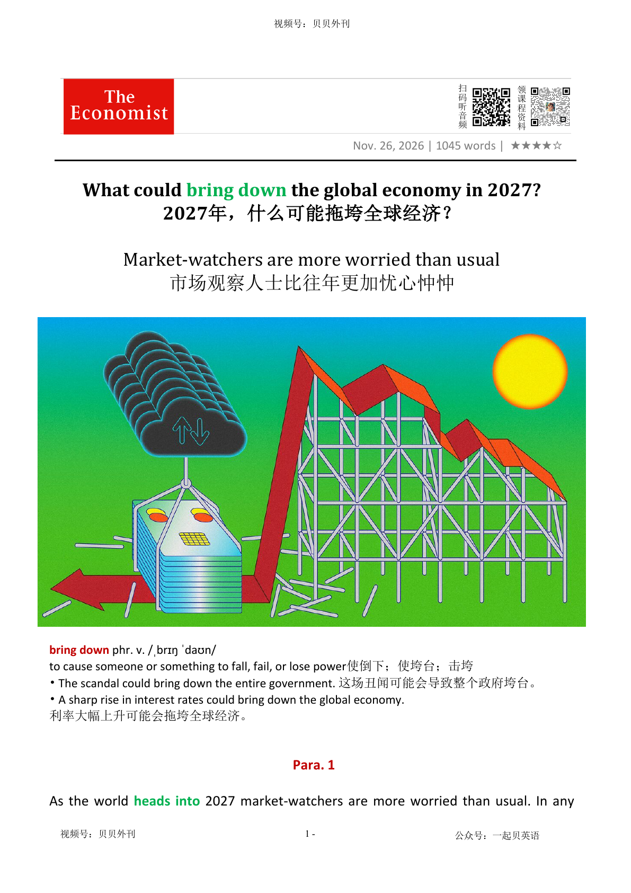

02 HEADLINE / 标题中英文解释
What could bring down the global economy in 2027?
2027年，什么可能拖垮全球经济？
Market-watchers are more worried than usual
市场观察人士比往年更加忧心忡忡
bring down
使倒下；使垮台；击垮
to cause someone or something to fall, fail, or lose power
What could bring down the global economy in 2027?
2027年，什么可能拖垮全球经济？
Market-watchers are more worried than usual
市场观察人士比往年更加忧心忡忡
使倒下；使垮台；击垮
to cause someone or something to fall, fail, or lose power文章首先排除三类较熟悉的危机诱因。
2026年的严重能源冲击没有造成全球增长崩塌，特朗普的关税没有改变经济增长趋势，2022年至2023年的激进加息也未引发预期中的衰退。
作者认为，现代经济对石油和制造业的依赖下降，使这些冲击的破坏力有所减弱。
真正值得警惕的风险来自政府债务和人工智能。
发达经济体债务高企，市场仍相信政府会正常偿债；一旦这种信念因不负责任的政府或无法承受的偿债成本而动摇，危机可能迅速扩散。
人工智能则可能以三种方式制造风险：算法交易造成类似1987年的闪崩，估值和盈利预期逆转重演2000年泡沫破裂，高杠杆的新云服务商和复杂融资链条又可能产生类似2008年的连锁反应。
与此同时，AI尚未大规模替代白领，也没有带来明显的生产率提升。
文章最后提醒，下一场危机或许会借鉴旧模式，却更可能呈现一种全新的形态。
People who watch financial markets are more worried than usual as 2027 approaches. However, the article says that several familiar dangers may not cause the next global recession.
Recent energy shocks, trade barriers and high interest rates have hurt the economy less than many experts expected. The first major risk is government debt.
Rich countries, especially the United States, are borrowing very large amounts. Markets still believe that governments will control their finances and repay their debts.
If investors lose this belief, borrowing costs could rise and a debt crisis could spread through the global financial system. The second risk is artificial intelligence.
AI trading programs could react in confusing ways and cause a sudden market crash like the one in 1987. High hopes for AI profits could also fall quickly, as technology shares did in 2000.
Debt inside the AI industry creates a third danger. New cloud companies are borrowing huge sums to build data centres, and AI firms are financially connected to one another.
If expected income arrives late or never appears, some companies may fail to repay their debts and pass losses to others. For now, AI has replaced fewer workers than many people expected and has not clearly improved productivity.
The article concludes that the next crisis may share features with older crashes, but it will probably have a form of its own.
2027衰退风险预判（Para 1-4） ├─ 市场预期：美国衰退概率升至25% ├─ 排除诱因：能源冲击、贸易战、高利率 潜在两大危机源头（Para 5-9） ├─ 债务风险：发达经济体高负债，法国选举或成导火索 └─ AI金融风险：对标1987、2000、2008三类危机模板 AI现实经济影响（Para 10-13） ├─ 就业现状：未大规模替代白领，白领岗位占比仍高位 └─ 生产力困境：企业落地率低，预期红利尚未兑现 收尾总结（Para 14） └─ 不确定性：下一轮危机大概率是全新形态
As the world heads into 2027 market-watchers are more worried than usual. In any given特定的 year the chances of a recession经济衰退 are around 15%. But Kalshi, a prediction market, puts the chance in the coming year of a recession in America, which could take the global economy tumbling down with it, at nearly 25%. Is that plausible有道理的?
随着世界步入2027年，市场观察人士的忧虑程度已超过往常。通常而言，任何一年发生经济衰退的概率都在15%左右。但预测市场平台Kalshi预计，未来一年美国陷入经济衰退的概率已接近25%，而一旦美国经济衰退，还可能将全球经济一同拖入深渊。这样的担忧究竟有没有道理？下一场经济危机又可能以何种形式降临？
Start by considering what probably won’t cause the next crisis. In recent years shock upon shock has battered连续猛击 the global economy. But growth has not nosedived骤降. That suggests the next crash暴跌 won’t be from an energy shock: the closure of the Strait of Hormuz in 2026 was one of the biggest such shocks since the 1970s, yet it barely affected global growth. Economies, it seems, are now less oil-dependent and more flexible.
先看看下一场危机大概不会由什么引发。近年来，全球经济接连遭受一轮又一轮的冲击，然而经济增长却始终没有断崖式下跌。这意味着，下一场危机恐怕不会源于能源冲击。2026年，霍尔木兹海峡关闭，造成了自20世纪70年代以来最严重的能源冲击之一，但对全球经济增长的影响却微乎其微。看来，如今各国经济对石油的依赖程度已经有所下降，灵活性也更强了。
A trade war probably won’t do the trick奏效, either. Donald Trump’s enthusiasm for tariffs has hardly dimmed since his blitz集中力量的行动 of trade barriers on “Liberation Day” in April 2025. At the time, forecasters put the odds可能性 of an imminent即将发生的 recession in America as high as two- thirds. But in the event结果却是, American and global GDP stayed pretty much几乎 exactly on their earlier trend. Whatever new levies Mr Trump imposes推行 as his presidency enters its lame- duck phase probably will not shake up彻底改革 the global economy much more.
贸易战恐怕也难以引爆危机。自2025年4月以“解放日”为名大举筑起贸易壁垒以来，特朗普对关税的热情丝毫未减。当时，经济预测人士一度认为，美国即将陷入衰退的概率高达三分之二。然而，事后来看，无论是美国还是全球经济，国内生产总值的增长轨迹都几乎与此前的趋势完全一致。随着特朗普总统任期进入“跛脚鸭”阶段，他即便再推出新的关税措施，恐怕也很难给全球经济带来更大的震荡。
Even high interest rates, that perennial长久的 cause of recessions, do not look especially threatening. Rudi Dornbusch, an economist, once quipped that America’s economic expansions don’t die of old age, but are murdered by the Federal Reserve—with raised interest rates. On that basis, the Fed’s huge rate increases in 2022 and 2023, and similar moves around the world, ought to have caused a crash. Bu t they did not, perhaps because the most interest-rate-sensitive sectors, such as manufacturing, are no longer so important to rich-world economies. So the more modest rate increases on the cards可能发生的 for 2027 are unlikely to cause serious problems for growth.
就连一向被视为经济衰退惯常诱因的高利率，如今看来也不那么令人担忧了。经济学家鲁迪·多恩布什曾打趣道：美国的经济扩张不会因为年岁渐长而消亡，而是会被美联储亲手扼杀——用加息这把枪。按照这一逻辑，美联储在2022年和2023年大幅加息，以及世界各国央行采取的类似行动，本应早就引发一场经济危机。然而，危机并未如期而至。原因或许在于，制造业等对利率最为敏感的行业，在发达经济体中的重要性已不如从前。因此，2027年可能出现的幅度更为温和的加息，恐怕也不至于给经济增长造成严重冲击。
What does that leave? Today’s biggest economic risks are probably government debt and artificial intelligence. A debt crisis would be more familiar. Emerging新兴的 markets have dealt with them for years. But rich-world governments, especially America, are now borrowing astonishing amounts—more, relative to与……相比 the size of their economies, than at any point outside wartime or around recessions. The repercussions影响 of a debt crisis embroiling使卷入 American Treasuries美国国债, which remain the world’s safe asset, would be vast. Rich countries’ debt levels are already giving bond markets indigestion消化不良.
那么，真正值得警惕的又是什么？如今最大的经济风险，很可能来自政府债务和人工智能。债务危机并不是什么新鲜事，新兴市场多年来一直深受其困扰。但如今，发达经济体政府，尤其是美国政府，正在以惊人的规模举债；相对于其经济规模，发达经济体的借债已经超过了除战时或经济衰退前后以外的任何时期。倘若美国国债市场卷入一场债务危机，其后果将不堪设想。毕竟，美国国债至今仍是全球金融体系中公认的安全资产。发达国家不断攀升的债务水平，已经让债券市场感到消化不良。
Markets mostly still expect governments to sort themselves out and pay back their debts (and not by inflating them away or imposing financial repression镇压). But real problems would start if that assumption were seriously challenged —perhaps if a particularly irresponsible不负责任的 government were elected, or if debts piled up so much that repayment归还借款 would simply be too painful. One catalyst催化剂 in 2027 might be France’s election, where the populist民粹主义的 right is in the lead.
目前，市场大体上仍然相信，各国政府终究会找到办法整顿财政、偿还债务，而不是靠通货膨胀稀释债务，或通过金融压抑的手段。但如果这一信念遭到严重动摇，真正的麻烦就会随之而来。比如，一个极不负责任的政府上台，或者债务不断累积，最终使偿债代价变得难以承受。2027年，一个潜在的风险触发点便是法国大选，目前民粹主义右翼阵营在选情中处于领先地位。
What about AI? Although the technology is new, economic history offers lessons. One scenario is 1987, when then-novel新颖的 computerised计算机化的 trading techniques spurred鞭策 a sharp, unexpected and global stock-market crash. As AI agents智能体 start trading at scale大规模地, in chaotic and potentially uninterpretable无法解读的 ways, a reprise重演 is possible.
那么，人工智能又会带来什么风险？尽管人工智能是一项新兴技术，但经济史早已为我们提供了值得借鉴的教训。一种可能的情形是重演1987年的股灾。当年，新兴的计算机化交易技术引发了一场突如其来、波及全球的股市暴跌。如今，随着人工智能智能体开始大规模参与交易，其交易行为可能变得混乱不堪，甚至连人类都难以理解。一旦如此，1987年的一幕就有可能再次上演。
Another worrying precedent先前出现的事例 is 2000. From railways to websites, revolutionary technologies often push markets into a tizzy紧张. When the tech bubble burst at the turn of the millennium一千年, plunging暴跌的 stocks dragged the wider economy down, too. In contrast to that period, AI firms have surging earnings, not just ever-more-optimistic valuations. But those earnings could return to earth回归理性 if competition reduces profit margins, or if the AI roll-out proves bumpier than expected.
另一个令人担忧的先例是2000年。从铁路到互联网网站，颠覆性技术往往会让资本市场陷入盲目狂热。当世纪之交的科技泡沫破裂时，股价暴跌也将整个经济拖入低谷。与当年不同的是，如今的人工智能企业拥有持续飙升的盈利，而不只是越来越乐观的估值。但如果竞争加剧侵蚀利润率，或者人工智能的推广进程比预期更加坎坷，这些盈利也可能迅速回落，重新回到现实水平。
Then there is 2008. At first, technology giants funded AI from their vast earnings and cash piles. Now they have turned to debt. Especially leveraged利用借贷资金的 are the “neoclouds新型云计算服务商”, upstarts borrowing huge sums to fund data centres. The financing links between AI firms are getting ever more circular循环的 and complex. That pattern of financial sophistication老练, built atop在…顶上 rickety不结实的 debt, has a clear precedent in the mortgage按揭-market troubles that helped kick off开始 the global financial crisis nearly 20 years ago. If anticipated预期 AI revenues that the whole edifice大厦 is relying on fail to materialise实现, or show up later than expected, some of those riskier borrowers may struggle to pay their debts. That, in turn进而, could hit the balance-sheets of other AI firms that are financing them. Chaos could easily snowball雪球.
还有2008年的教训。起初，科技巨头依靠雄厚的盈利和庞大的现金储备为人工智能提供资金。如今，它们却开始转向举债。其中，杠杆尤其高的是“新云服务商”，指一批新兴企业，它们通过大举借债来建设数据中心。人工智能企业之间的融资关系也变得愈发盘根错节。这种建立在脆弱债务之上的复杂金融结构，让人很容易联想到近20年前引发全球金融危机的次贷市场乱象。如果整个体系赖以运转的人工智能预期收入最终未能兑现，或者实际到账的时间远晚于预期，那么其中一些风险较高的借款企业就可能陷入偿债困境。而这又会反过来冲击其他为它们提供融资的人工智能企业的资产负债表。如此一来，混乱便很容易层层传导、不断放大。
Almost every week an artificial-intelligence lab releases a new model with ever more astonishing capabilities. Connoisseurs鉴赏家 claim that each advance improves their productivity, and look down their noses at those who have not kept up. AI researchers worry that progress is so rapid that, before long, the technology will be able to take over the world, or destroy it. Yet judging by measurements of the real economy, AI is having surprisingly little impact—a state of affairs事态 that will not change in 2027.
几乎每隔一个星期，就有一家人工智能实验室发布新模型，其能力一次比一次令人惊叹。专业人士声称，每一次技术进步都能进一步提升他们的生产力，并对那些尚未跟上步伐的人嗤之以鼻。人工智能研究人员则担心，技术进步的速度实在太快，用不了多久，人工智能就可能接管世界，甚至将其毁灭。然而，如果从现实经济的各项指标判断，就会发现：人工智能对实体经济的影响竟然如此有限。而且，这种局面在2027年恐怕也不会发生改变。
Many people expected AI to have disrupted the labour market by now, with bots putting millions of office-based employees out of work. Yet in America, the global centre of AI development, the share of workers employed in white-collar白领的 occupations is around an all-time high. The number of software developers is rising, even though writing code is what AI models do best.
许多人原本预计，人工智能早就应该扰乱劳动力市场，让机器人取代数百万办公室职员的工作。然而，在全球人工智能研发中心——美国，白领职业从业者占全体就业人口的比例却接近历史最高水平。软件开发人员的数量也仍在增长，尽管编写代码恰恰是人工智能模型最擅长的事情。
It is true that recent college graduates are struggling, with an unusually large gap between their unemployment rate and the overall level. But that is likely to be a result of the shift to hybrid混合的 and remote偏远的 working during the covid-19 pandemic. Across the OECD club经 合组织成员国 of mostly rich countries, the share of working-age people in employment is at an all-time high.
诚然，近几年大学毕业的年轻人正面临就业困境，他们的失业率与整体失业率之间出现了异常大的差距。但这很可能与新冠疫情期间工作模式向混合办公和远程办公转变有关。在由发达国家为主组成的经济合作与发展组织成员国中，劳动年龄人口的就业比例已经达到历史最高水平。
With AI displacing so few people, the hoped-for期盼已久的 gains to productivity have not materialised. America shows few signs of rising total factor productivity全要素生产率 (growth that cannot be explained by extra labour or capital). AI’s economic effects are muted减弱 in part because adoption of the technology remains surprisingly low. Only about a quarter of companies are using AI in a meaningful way. A survey suggests that the share of American workers using AI is no longer growing.
人工智能取代的劳动力如此有限，其原本令人期待的生产力提升也就迟迟未能兑现。美国的全要素生产率几乎没有显著上升的迹象。所谓全要素生产率，指的是无法单纯通过增加劳动力或资本投入来解释的经济增长部分。人工智能之所以尚未对经济产生显著影响，部分原因在于，这项技术的实际普及程度出人意料地低。真正有实质性应用的企业仅占四分之一左右。一项调查还显示，使用人工智能的美国劳动者比例已经停止增长。
Still, the future has a way of surprising. The chances are that the next crash—whether it comes in 2027 or later, and whatever family resemblances相似 it shares—will be its own creature entirely.
不过，未来向来不按常理出牌。下一场经济危机究竟会不会在2027年爆发，抑或要等到更久以后？它又会与过去的哪场危机有相似之处？这些问题都还没有答案。可以肯定的是，下一场危机很可能呈现出独属于这个时代的面貌。
使倒下；使垮台；击垮
to cause someone or something to fall, fail, or lose power
The scandal could bring down the entire government. 这场丑闻可能会导致整个政府垮台。
进入；步入；即将面临
to enter or approach a particular period, situation, or place
As the world heads into 2027, economic uncertainty is growing. 随着世界步入2027年，经济不确定性正在增加。
特定的；已知的；既定的
specified or known; accepted as a fact or condition
The results were calculated based on a given set of assumptions. 这些结果是根据一组既定假设计算出来的。
In any given year the chances of a recession are around 15%.
随着世界步入2027年，市场观察人士的忧虑程度已超过往常。通常而言，任何一年发生经济衰退的概率都在15%左右。但预测市场平台Kalshi预计，未来一年美国陷入经济衰退的概率已接近25%，而一旦美国经济衰退，还可能将全球经济一同拖入深渊。这样的担忧究竟有没有道理？下一场经济危机又可能以何种形式降临？
经济衰退; 萧条
A recession is a period when the economy of a country is doing badly, for example because industry is producing less and more people are becoming unemployed.
The oil price increases sent Europe into deep recession. 石油价格的上涨使欧洲陷入严重的经济衰退。
In any given year the chances of a recession are around 15%.
随着世界步入2027年，市场观察人士的忧虑程度已超过往常。通常而言，任何一年发生经济衰退的概率都在15%左右。但预测市场平台Kalshi预计，未来一年美国陷入经济衰退的概率已接近25%，而一旦美国经济衰退，还可能将全球经济一同拖入深渊。这样的担忧究竟有没有道理？下一场经济危机又可能以何种形式降临？
轰然倒塌；摇摇欲坠地倒下
to fall suddenly and uncontrollably
The old building eventually tumbled down after years of neglect. 这座老建筑年久失修，最终轰然倒塌。
有道理的；可信的
reasonable and likely to be true
Her story sounded perfectly plausible.她的说辞听起来言之有理。
Is that plausible?
随着世界步入2027年，市场观察人士的忧虑程度已超过往常。通常而言，任何一年发生经济衰退的概率都在15%左右。但预测市场平台Kalshi预计，未来一年美国陷入经济衰退的概率已接近25%，而一旦美国经济衰退，还可能将全球经济一同拖入深渊。这样的担忧究竟有没有道理？下一场经济危机又可能以何种形式降临？
暴跌；倒闭；
a sudden serious fall in the price or value of sth; the occasion when a business, etc. fails
the 1987 stock market crash 1987年的股票市场暴跌
That suggests the next crash won’t be from an energy shock: the closure of the Strait of Hormuz in 2026 was one of the biggest such shocks since the 1970s, yet it barely affected global growth.
先看看下一场危机大概不会由什么引发。近年来，全球经济接连遭受一轮又一轮的冲击，然而经济增长却始终没有断崖式下跌。这意味着，下一场危机恐怕不会源于能源冲击。2026年，霍尔木兹海峡关闭，造成了自20世纪70年代以来最严重的能源冲击之一，但对全球经济增长的影响却微乎其微。看来，如今各国经济对石油的依赖程度已经有所下降，灵活性也更强了。
连续猛击 (某人)
To batter someone means to hit them many times, using fists or a heavy object.
The passengers were battered by flying luggage and cargo as the cabin lost pressure. 当机舱失去压力时，乘客们受到飞落的行李和货物连续猛击。
In recent years shock upon shock has battered the global economy.
先看看下一场危机大概不会由什么引发。近年来，全球经济接连遭受一轮又一轮的冲击，然而经济增长却始终没有断崖式下跌。这意味着，下一场危机恐怕不会源于能源冲击。2026年，霍尔木兹海峡关闭，造成了自20世纪70年代以来最严重的能源冲击之一，但对全球经济增长的影响却微乎其微。看来，如今各国经济对石油的依赖程度已经有所下降，灵活性也更强了。
骤降；急剧下跌；暴跌
1. to fall suddenly
Building costs have nosedived.建筑费用猛跌下来。 2. to fall suddenly with the front part pointing towards the ground俯冲
But growth has not nosedived.
先看看下一场危机大概不会由什么引发。近年来，全球经济接连遭受一轮又一轮的冲击，然而经济增长却始终没有断崖式下跌。这意味着，下一场危机恐怕不会源于能源冲击。2026年，霍尔木兹海峡关闭，造成了自20世纪70年代以来最严重的能源冲击之一，但对全球经济增长的影响却微乎其微。看来，如今各国经济对石油的依赖程度已经有所下降，灵活性也更强了。
奏效；达到预期效果；解决问题
to achieve the desired result or solve a problem
A small cut in interest rates might do the trick and boost consumer spending. 小幅降息或许就能奏效，提振消费支出。
A trade war probably won’t do the trick, either.
贸易战恐怕也难以引爆危机。自2025年4月以“解放日”为名大举筑起贸易壁垒以来，特朗普对关税的热情丝毫未减。当时，经济预测人士一度认为，美国即将陷入衰退的概率高达三分之二。然而，事后来看，无论是美国还是全球经济，国内生产总值的增长轨迹都几乎与此前的趋势完全一致。随着特朗普总统任期进入“跛脚鸭”阶段，他即便再推出新的关税措施，恐怕也很难给全球经济带来更大的震荡。
（使）变暗淡，变微弱，变昏暗
if a light dims or if you dim it, it becomes or you make it less bright
The lights in the theatre dimmed as the curtain rose.幕布升起，剧场内的灯光暗了下来。
集中力量的行动；闪击式行动
1. something which is done with a lot of energy
an advertising/ a media blitz (= a lot of information about sth on television, in newspapers, etc.) 集中火力的广告╱媒体宣传 2. a sudden attack突袭；闪电战
Donald Trump’s enthusiasm for tariffs has hardly dimmed since his blitz of trade barriers on “Liberation Day” in April 2025.
贸易战恐怕也难以引爆危机。自2025年4月以“解放日”为名大举筑起贸易壁垒以来，特朗普对关税的热情丝毫未减。当时，经济预测人士一度认为，美国即将陷入衰退的概率高达三分之二。然而，事后来看，无论是美国还是全球经济，国内生产总值的增长轨迹都几乎与此前的趋势完全一致。随着特朗普总统任期进入“跛脚鸭”阶段，他即便再推出新的关税措施，恐怕也很难给全球经济带来更大的震荡。
（事物发生的）可能性，概率，几率，机会
the degree to which sth is likely to happen
The odds are very much in our favour (= we are likely to succeed) .我方胜算的几率极大。
At the time, forecasters put the odds of an imminent recession in America as high as two- thirds.
贸易战恐怕也难以引爆危机。自2025年4月以“解放日”为名大举筑起贸易壁垒以来，特朗普对关税的热情丝毫未减。当时，经济预测人士一度认为，美国即将陷入衰退的概率高达三分之二。然而，事后来看，无论是美国还是全球经济，国内生产总值的增长轨迹都几乎与此前的趋势完全一致。随着特朗普总统任期进入“跛脚鸭”阶段，他即便再推出新的关税措施，恐怕也很难给全球经济带来更大的震荡。
即将发生的；临近的
likely to happen very soon
the imminent threat of invasion迫在眉睫的入侵威胁
At the time, forecasters put the odds of an imminent recession in America as high as two- thirds.
贸易战恐怕也难以引爆危机。自2025年4月以“解放日”为名大举筑起贸易壁垒以来，特朗普对关税的热情丝毫未减。当时，经济预测人士一度认为，美国即将陷入衰退的概率高达三分之二。然而，事后来看，无论是美国还是全球经济，国内生产总值的增长轨迹都几乎与此前的趋势完全一致。随着特朗普总统任期进入“跛脚鸭”阶段，他即便再推出新的关税措施，恐怕也很难给全球经济带来更大的震荡。
结果却是；实际情况是；最终
as it actually happened or turned out; in reality
In the event, the economic slowdown was less severe than expected. 但实际情况是，经济放缓的程度没有预期的那么严重。
But in the event, American and global GDP stayed pretty much exactly on their earlier trend.
贸易战恐怕也难以引爆危机。自2025年4月以“解放日”为名大举筑起贸易壁垒以来，特朗普对关税的热情丝毫未减。当时，经济预测人士一度认为，美国即将陷入衰退的概率高达三分之二。然而，事后来看，无论是美国还是全球经济，国内生产总值的增长轨迹都几乎与此前的趋势完全一致。随着特朗普总统任期进入“跛脚鸭”阶段，他即便再推出新的关税措施，恐怕也很难给全球经济带来更大的震荡。
几乎；差不多；基本上
almost completely or nearly all; to a large extent
The two products are pretty much the same. 这两种产品基本上没有区别。
But in the event, American and global GDP stayed pretty much exactly on their earlier trend.
贸易战恐怕也难以引爆危机。自2025年4月以“解放日”为名大举筑起贸易壁垒以来，特朗普对关税的热情丝毫未减。当时，经济预测人士一度认为，美国即将陷入衰退的概率高达三分之二。然而，事后来看，无论是美国还是全球经济，国内生产总值的增长轨迹都几乎与此前的趋势完全一致。随着特朗普总统任期进入“跛脚鸭”阶段，他即便再推出新的关税措施，恐怕也很难给全球经济带来更大的震荡。
征收额；（尤指）税款
an extra amount of money that has to be paid, especially as a tax to the government
to put/impose a levy on oil imports对进口石油征税
推行，采用（规章制度）；强制实行
to introduce a new law, rule, tax, etc.; to order that a rule, punishment, etc. be used
A new tax was imposed on fuel.当局开始对燃油征收一项新税。
Whatever new levies Mr Trump imposes as his presidency enters its lame- duck phase probably will not shake up the global economy much more.
贸易战恐怕也难以引爆危机。自2025年4月以“解放日”为名大举筑起贸易壁垒以来，特朗普对关税的热情丝毫未减。当时，经济预测人士一度认为，美国即将陷入衰退的概率高达三分之二。然而，事后来看，无论是美国还是全球经济，国内生产总值的增长轨迹都几乎与此前的趋势完全一致。随着特朗普总统任期进入“跛脚鸭”阶段，他即便再推出新的关税措施，恐怕也很难给全球经济带来更大的震荡。
跛脚鸭；即将卸任、权力受到削弱的政治人物或政府官员
a politician or government official who has little power because they are nearing the end of their time in office
The president became a lame duck after his party lost control of Congress. 该总统所在政党失去国会控制权后，他成了一位权力受限的“跛脚鸭”总统。
彻底改革；大幅调整；重组
to make major changes to an organization, system, or situation in order to improve it or make it more effective
The new CEO plans to shake up the company's management team. 新任首席执行官计划对公司管理团队进行大幅调整。
Whatever new levies Mr Trump imposes as his presidency enters its lame- duck phase probably will not shake up the global economy much more.
贸易战恐怕也难以引爆危机。自2025年4月以“解放日”为名大举筑起贸易壁垒以来，特朗普对关税的热情丝毫未减。当时，经济预测人士一度认为，美国即将陷入衰退的概率高达三分之二。然而，事后来看，无论是美国还是全球经济，国内生产总值的增长轨迹都几乎与此前的趋势完全一致。随着特朗普总统任期进入“跛脚鸭”阶段，他即便再推出新的关税措施，恐怕也很难给全球经济带来更大的震荡。
长久的；持续的；反复出现的
1. continuing for a very long time; happening again and again
the perennial problem of water shortage缺水这个老问题
Even high interest rates, that perennial cause of recessions, do not look especially threatening.
就连一向被视为经济衰退惯常诱因的高利率，如今看来也不那么令人担忧了。经济学家鲁迪·多恩布什曾打趣道：美国的经济扩张不会因为年岁渐长而消亡，而是会被美联储亲手扼杀——用加息这把枪。按照这一逻辑，美联储在2022年和2023年大幅加息，以及世界各国央行采取的类似行动，本应早就引发一场经济危机。然而，危机并未如期而至。原因或许在于，制造业等对利率最为敏感的行业，在发达经济体中的重要性已不如从前。因此，2027年可能出现的幅度更为温和的加息，恐…
俏皮地说；讥讽地说；说俏皮话
to make a witty or sarcastic remark
“That's one way to solve the problem,” she quipped. “这倒不失为解决问题的一种办法。”她俏皮地说道。
可能发生的；有望发生的；在计划之中的
likely or expected to happen; possible in the future
A global recession may be on the cards in 2027. 2027年全球经济可能会陷入衰退。
So the more modest rate increases on the cards for 2027 are unlikely to cause serious problems for growth.
就连一向被视为经济衰退惯常诱因的高利率，如今看来也不那么令人担忧了。经济学家鲁迪·多恩布什曾打趣道：美国的经济扩张不会因为年岁渐长而消亡，而是会被美联储亲手扼杀——用加息这把枪。按照这一逻辑，美联储在2022年和2023年大幅加息，以及世界各国央行采取的类似行动，本应早就引发一场经济危机。然而，危机并未如期而至。原因或许在于，制造业等对利率最为敏感的行业，在发达经济体中的重要性已不如从前。因此，2027年可能出现的幅度更为温和的加息，恐…
新兴的；逐渐兴起的；崭露 头角的
developing or beginning to exist, become known, or become important
Emerging economies are playing an increasingly important role in global trade. 新兴经济体在全球贸易中正发挥着越来越重要的作用。
Emerging markets have dealt with them for years.
那么，真正值得警惕的又是什么？如今最大的经济风险，很可能来自政府债务和人工智能。债务危机并不是什么新鲜事，新兴市场多年来一直深受其困扰。但如今，发达经济体政府，尤其是美国政府，正在以惊人的规模举债；相对于其经济规模，发达经济体的借债已经超过了除战时或经济衰退前后以外的任何时期。倘若美国国债市场卷入一场债务危机，其后果将不堪设想。毕竟，美国国债至今仍是全球金融体系中公认的安全资产。发达国家不断攀升的债务水平，已经让债券市场感到消化不良。
与……相比；相对于；关于
compared with or in relation to something else
Housing prices remain high relative to average incomes. 与平均收入相比，房价仍然很高。
But rich-world governments, especially America, are now borrowing astonishing amounts—more, relative to the size of their economies, than at any point outside wartime or around recessions.
那么，真正值得警惕的又是什么？如今最大的经济风险，很可能来自政府债务和人工智能。债务危机并不是什么新鲜事，新兴市场多年来一直深受其困扰。但如今，发达经济体政府，尤其是美国政府，正在以惊人的规模举债；相对于其经济规模，发达经济体的借债已经超过了除战时或经济衰退前后以外的任何时期。倘若美国国债市场卷入一场债务危机，其后果将不堪设想。毕竟，美国国债至今仍是全球金融体系中公认的安全资产。发达国家不断攀升的债务水平，已经让债券市场感到消化不良。
（间接的）影响，反响，恶果
an indirect and usually bad result of an action or event that may happen some time afterwards
The collapse of the company will have repercussions for the whole industry. 这家公司的垮台将会给整个行业造成间接的负面影响。
The repercussions of a debt crisis embroiling American Treasuries, which remain the world’s safe asset, would be vast.
那么，真正值得警惕的又是什么？如今最大的经济风险，很可能来自政府债务和人工智能。债务危机并不是什么新鲜事，新兴市场多年来一直深受其困扰。但如今，发达经济体政府，尤其是美国政府，正在以惊人的规模举债；相对于其经济规模，发达经济体的借债已经超过了除战时或经济衰退前后以外的任何时期。倘若美国国债市场卷入一场债务危机，其后果将不堪设想。毕竟，美国国债至今仍是全球金融体系中公认的安全资产。发达国家不断攀升的债务水平，已经让债券市场感到消化不良。
使卷入（纠纷、冲突等）；使陷入
to involve someone or something in a difficult, complicated, or unpleasant situation
The country was embroiled in a bitter trade dispute with its neighbors. 该国卷入了与邻国之间激烈的贸易争端。
The repercussions of a debt crisis embroiling American Treasuries, which remain the world’s safe asset, would be vast.
那么，真正值得警惕的又是什么？如今最大的经济风险，很可能来自政府债务和人工智能。债务危机并不是什么新鲜事，新兴市场多年来一直深受其困扰。但如今，发达经济体政府，尤其是美国政府，正在以惊人的规模举债；相对于其经济规模，发达经济体的借债已经超过了除战时或经济衰退前后以外的任何时期。倘若美国国债市场卷入一场债务危机，其后果将不堪设想。毕竟，美国国债至今仍是全球金融体系中公认的安全资产。发达国家不断攀升的债务水平，已经让债券市场感到消化不良。
美国国债；美国财政部发行的政府债券
U.S. government debt securities issued by the Treasury Department
Investors often buy Treasuries as a safe haven during periods of market uncertainty.
The repercussions of a debt crisis embroiling American Treasuries, which remain the world’s safe asset, would be vast.
那么，真正值得警惕的又是什么？如今最大的经济风险，很可能来自政府债务和人工智能。债务危机并不是什么新鲜事，新兴市场多年来一直深受其困扰。但如今，发达经济体政府，尤其是美国政府，正在以惊人的规模举债；相对于其经济规模，发达经济体的借债已经超过了除战时或经济衰退前后以外的任何时期。倘若美国国债市场卷入一场债务危机，其后果将不堪设想。毕竟，美国国债至今仍是全球金融体系中公认的安全资产。发达国家不断攀升的债务水平，已经让债券市场感到消化不良。
消化不良；消化不适
difficulty in digesting food, often causing discomfort or pain
Eating too much spicy food can cause indigestion. 吃太多辛辣食物可能会导致消化不良。
Rich countries’ debt levels are already giving bond markets indigestion.
那么，真正值得警惕的又是什么？如今最大的经济风险，很可能来自政府债务和人工智能。债务危机并不是什么新鲜事，新兴市场多年来一直深受其困扰。但如今，发达经济体政府，尤其是美国政府，正在以惊人的规模举债；相对于其经济规模，发达经济体的借债已经超过了除战时或经济衰退前后以外的任何时期。倘若美国国债市场卷入一场债务危机，其后果将不堪设想。毕竟，美国国债至今仍是全球金融体系中公认的安全资产。发达国家不断攀升的债务水平，已经让债券市场感到消化不良。
解决；处理；理顺
to deal with a problem or difficult situation successfully; to put something in order
The government needs to sort out its growing debt problem. 政府需要解决日益严重的债务问题。
（通过通货膨胀）逐渐侵蚀；使实际价值缩水
to gradually reduce or eliminate the real value of something through inflation
Inflation can gradually inflate away the real value of government debt. 通货膨胀可以逐渐侵蚀政府债务的实际价值。
镇压; 压制
Repression is the use of force to restrict and control a society or other group of people.
...a society conditioned by violence and repression. …处于暴力和压迫中的一个社会。
Markets mostly still expect governments to sort themselves out and pay back their debts (and not by inflating them away or imposing financial repression).
目前，市场大体上仍然相信，各国政府终究会找到办法整顿财政、偿还债务，而不是靠通货膨胀稀释债务，或通过金融压抑的手段。但如果这一信念遭到严重动摇，真正的麻烦就会随之而来。比如，一个极不负责任的政府上台，或者债务不断累积，最终使偿债代价变得难以承受。2027年，一个潜在的风险触发点便是法国大选，目前民粹主义右翼阵营在选情中处于领先地位。
不负责任的；不负责任行事的
not showing or having a proper sense of responsibility
It would be irresponsible to ignore the risks of rising government debt. 忽视政府债务不断上升的风险是不负责任的。
But real problems would start if that assumption were seriously challenged —perhaps if a particularly irresponsible government were elected, or if debts piled up so much that repayment would simply be too painful.
目前，市场大体上仍然相信，各国政府终究会找到办法整顿财政、偿还债务，而不是靠通货膨胀稀释债务，或通过金融压抑的手段。但如果这一信念遭到严重动摇，真正的麻烦就会随之而来。比如，一个极不负责任的政府上台，或者债务不断累积，最终使偿债代价变得难以承受。2027年，一个潜在的风险触发点便是法国大选，目前民粹主义右翼阵营在选情中处于领先地位。
（问题、债务、工作等） 不断积累；堆积
to accumulate or increase in quantity, especially problems, debts, or work
Government debt continues to pile up as spending outpaces revenue. 随着支出超过收入，政府债务持续累积。
归还借款；偿还债务
the act of paying back money that you have borrowed from a bank, etc.
The loan is due for repayment by the end of the year.这笔借款要在年底还清。
But real problems would start if that assumption were seriously challenged —perhaps if a particularly irresponsible government were elected, or if debts piled up so much that repayment would simply be too painful.
目前，市场大体上仍然相信，各国政府终究会找到办法整顿财政、偿还债务，而不是靠通货膨胀稀释债务，或通过金融压抑的手段。但如果这一信念遭到严重动摇，真正的麻烦就会随之而来。比如，一个极不负责任的政府上台，或者债务不断累积，最终使偿债代价变得难以承受。2027年，一个潜在的风险触发点便是法国大选，目前民粹主义右翼阵营在选情中处于领先地位。
催化剂 2. a person or thing that causes a change促使变化的人；引发变化的因素
1. a substance that makes a chemical reaction happen faster without being changed itself
I see my role as being a catalyst for change.我认为我的角色是促成变革。
One catalyst in 2027 might be France’s election, where the populist right is in the lead.
目前，市场大体上仍然相信，各国政府终究会找到办法整顿财政、偿还债务，而不是靠通货膨胀稀释债务，或通过金融压抑的手段。但如果这一信念遭到严重动摇，真正的麻烦就会随之而来。比如，一个极不负责任的政府上台，或者债务不断累积，最终使偿债代价变得难以承受。2027年，一个潜在的风险触发点便是法国大选，目前民粹主义右翼阵营在选情中处于领先地位。
民粹主义的；平民主义的
relating to political ideas or actions that claim to represent the interests and opinions of ordinary people, often by opposing established elites
The candidate has gained support by promoting populist policies. 这位候选人通过推行民粹主义政策赢得了支持。
One catalyst in 2027 might be France’s election, where the populist right is in the lead.
目前，市场大体上仍然相信，各国政府终究会找到办法整顿财政、偿还债务，而不是靠通货膨胀稀释债务，或通过金融压抑的手段。但如果这一信念遭到严重动摇，真正的麻烦就会随之而来。比如，一个极不负责任的政府上台，或者债务不断累积，最终使偿债代价变得难以承受。2027年，一个潜在的风险触发点便是法国大选，目前民粹主义右翼阵营在选情中处于领先地位。
新颖的；新奇的；独创的
new, original, and different from anything seen or known before
The company has developed a novel approach to reducing production costs. 这家公司开发了一种降低生产成本的新方法。
One scenario is 1987, when then-novel computerised trading techniques spurred a sharp, unexpected and global stock-market crash.
那么，人工智能又会带来什么风险？尽管人工智能是一项新兴技术，但经济史早已为我们提供了值得借鉴的教训。一种可能的情形是重演1987年的股灾。当年，新兴的计算机化交易技术引发了一场突如其来、波及全球的股市暴跌。如今，随着人工智能智能体开始大规模参与交易，其交易行为可能变得混乱不堪，甚至连人类都难以理解。一旦如此，1987年的一幕就有可能再次上演。
计算机化的；电脑控制的
controlled, operated, or done by computers
The bank has introduced a fully computerised accounting system. 这家银行引入了一套完全计算机化的会计系统。
One scenario is 1987, when then-novel computerised trading techniques spurred a sharp, unexpected and global stock-market crash.
那么，人工智能又会带来什么风险？尽管人工智能是一项新兴技术，但经济史早已为我们提供了值得借鉴的教训。一种可能的情形是重演1987年的股灾。当年，新兴的计算机化交易技术引发了一场突如其来、波及全球的股市暴跌。如今，随着人工智能智能体开始大规模参与交易，其交易行为可能变得混乱不堪，甚至连人类都难以理解。一旦如此，1987年的一幕就有可能再次上演。
鞭策；激励；刺激
1. to encourage sb to do sth or to encourage them to try harder to achieve sth
Her difficult childhood spurred her on to succeed.她艰辛的童年激励她取得成功。 2. to make sth happen faster or sooner促进，加速，刺激（某事发生）
One scenario is 1987, when then-novel computerised trading techniques spurred a sharp, unexpected and global stock-market crash.
那么，人工智能又会带来什么风险？尽管人工智能是一项新兴技术，但经济史早已为我们提供了值得借鉴的教训。一种可能的情形是重演1987年的股灾。当年，新兴的计算机化交易技术引发了一场突如其来、波及全球的股市暴跌。如今，随着人工智能智能体开始大规模参与交易，其交易行为可能变得混乱不堪，甚至连人类都难以理解。一旦如此，1987年的一幕就有可能再次上演。
智能体（能够自主执行任务、作出决策并采取行动的人工智能系统）
an artificial intelligence system that can independently perform tasks, make decisions, and take actions to achieve a specific goal
AI agents can handle complex tasks with minimal human supervision. 人工智能智能体能够在极少人工监督的情况下处理复杂任务。
As AI agents start trading at scale, in chaotic and potentially uninterpretable ways, a reprise is possible.
那么，人工智能又会带来什么风险？尽管人工智能是一项新兴技术，但经济史早已为我们提供了值得借鉴的教训。一种可能的情形是重演1987年的股灾。当年，新兴的计算机化交易技术引发了一场突如其来、波及全球的股市暴跌。如今，随着人工智能智能体开始大规模参与交易，其交易行为可能变得混乱不堪，甚至连人类都难以理解。一旦如此，1987年的一幕就有可能再次上演。
大规模地；大批量地
on a large scale; involving large numbers or quantities
The company is using AI to automate its operations at scale. 这家公司正在利用人工智能大规模实现业务自动化。
As AI agents start trading at scale, in chaotic and potentially uninterpretable ways, a reprise is possible.
那么，人工智能又会带来什么风险？尽管人工智能是一项新兴技术，但经济史早已为我们提供了值得借鉴的教训。一种可能的情形是重演1987年的股灾。当年，新兴的计算机化交易技术引发了一场突如其来、波及全球的股市暴跌。如今，随着人工智能智能体开始大规模参与交易，其交易行为可能变得混乱不堪，甚至连人类都难以理解。一旦如此，1987年的一幕就有可能再次上演。
无法解读的；难以理解的；无法解释的
impossible or very difficult to understand or explain
The data was so complex that the results were almost uninterpretable. 这些数据过于复杂，导致 结果几乎无法解读。
As AI agents start trading at scale, in chaotic and potentially uninterpretable ways, a reprise is possible.
那么，人工智能又会带来什么风险？尽管人工智能是一项新兴技术，但经济史早已为我们提供了值得借鉴的教训。一种可能的情形是重演1987年的股灾。当年，新兴的计算机化交易技术引发了一场突如其来、波及全球的股市暴跌。如今，随着人工智能智能体开始大规模参与交易，其交易行为可能变得混乱不堪，甚至连人类都难以理解。一旦如此，1987年的一幕就有可能再次上演。
重演；再次出现；重复上演
a repetition or recurrence of something, especially an earlier event or situation
The latest economic crisis is a reprise of the financial turmoil seen a decade ago. 最近的经济危机是 十年前金融动荡的重演。
As AI agents start trading at scale, in chaotic and potentially uninterpretable ways, a reprise is possible.
那么，人工智能又会带来什么风险？尽管人工智能是一项新兴技术，但经济史早已为我们提供了值得借鉴的教训。一种可能的情形是重演1987年的股灾。当年，新兴的计算机化交易技术引发了一场突如其来、波及全球的股市暴跌。如今，随着人工智能智能体开始大规模参与交易，其交易行为可能变得混乱不堪，甚至连人类都难以理解。一旦如此，1987年的一幕就有可能再次上演。
先前出现的事例；前例；先例
a similar action or event that happened earlier
historical precedents历史前例
Another worrying precedent is 2000.
另一个令人担忧的先例是2000年。从铁路到互联网网站，颠覆性技术往往会让资本市场陷入盲目狂热。当世纪之交的科技泡沫破裂时，股价暴跌也将整个经济拖入低谷。与当年不同的是，如今的人工智能企业拥有持续飙升的盈利，而不只是越来越乐观的估值。但如果竞争加剧侵蚀利润率，或者人工智能的推广进程比预期更加坎坷，这些盈利也可能迅速回落，重新回到现实水平。
紧张；慌张；心慌意乱
a state of nervous excitement or confusion
She was in a real tizzy before the meeting .她会前感到心慌。
From railways to websites, revolutionary technologies often push markets into a tizzy.
另一个令人担忧的先例是2000年。从铁路到互联网网站，颠覆性技术往往会让资本市场陷入盲目狂热。当世纪之交的科技泡沫破裂时，股价暴跌也将整个经济拖入低谷。与当年不同的是，如今的人工智能企业拥有持续飙升的盈利，而不只是越来越乐观的估值。但如果竞争加剧侵蚀利润率，或者人工智能的推广进程比预期更加坎坷，这些盈利也可能迅速回落，重新回到现实水平。
一千年
1. A millennium is a period of one thousand years, especially one which begins and ends with a year ending in "000," for example the period from the year 1000 to the year 2000.
...the dawn of a new millennium. …新千年的开始。 2. Many people refer to the year 2000 as the Millennium. 2000年; 千禧年
When the tech bubble burst at the turn of the millennium, plunging stocks dragged the wider economy down, too.
另一个令人担忧的先例是2000年。从铁路到互联网网站，颠覆性技术往往会让资本市场陷入盲目狂热。当世纪之交的科技泡沫破裂时，股价暴跌也将整个经济拖入低谷。与当年不同的是，如今的人工智能企业拥有持续飙升的盈利，而不只是越来越乐观的估值。但如果竞争加剧侵蚀利润率，或者人工智能的推广进程比预期更加坎坷，这些盈利也可能迅速回落，重新回到现实水平。
（价格、数量等）暴跌的；急剧下降的
falling or decreasing suddenly and sharply
The country is struggling with plunging oil prices. 该国正努力应对暴跌的油价。
When the tech bubble burst at the turn of the millennium, plunging stocks dragged the wider economy down, too.
另一个令人担忧的先例是2000年。从铁路到互联网网站，颠覆性技术往往会让资本市场陷入盲目狂热。当世纪之交的科技泡沫破裂时，股价暴跌也将整个经济拖入低谷。与当年不同的是，如今的人工智能企业拥有持续飙升的盈利，而不只是越来越乐观的估值。但如果竞争加剧侵蚀利润率，或者人工智能的推广进程比预期更加坎坷，这些盈利也可能迅速回落，重新回到现实水平。
拖累；拉低；使……走下坡路
to cause something to decline or become weaker
Weak consumer spending could drag down economic growth. 疲软的消费支出可能会拖累经济增长。
（股价等）回归理性；回落
to fall back to a more realistic or normal level after a period of unusually high prices or expectations
After a period of rapid growth, the company's stock price finally returned to earth. 在经历一段快速上涨后，这家公司的股价终于回归理性。
But those earnings could return to earth if competition reduces profit margins, or if the AI roll-out proves bumpier than expected.
另一个令人担忧的先例是2000年。从铁路到互联网网站，颠覆性技术往往会让资本市场陷入盲目狂热。当世纪之交的科技泡沫破裂时，股价暴跌也将整个经济拖入低谷。与当年不同的是，如今的人工智能企业拥有持续飙升的盈利，而不只是越来越乐观的估值。但如果竞争加剧侵蚀利润率，或者人工智能的推广进程比预期更加坎坷，这些盈利也可能迅速回落，重新回到现实水平。
推出；发布；部署
the introduction or launch of a new product, service, or system
The company announced the nationwide rollout of its new AI platform. 该公司宣布在全国范围内 推出其新的人工智能平台。
不平的；多凸块的
1. not even; with a lot of bumps
a bumpy road/track崎岖不平的道路╱小道
利用借贷资金的；杠杆化的
involving the use of borrowed money to finance an investment or business activity
The company is highly leveraged, with a large amount of debt on its balance sheet. 这家公司杠杆率很高，资产负债表上背负着大量债务。
Especially leveraged are the “neoclouds”, upstarts borrowing huge sums to fund data centres.
还有2008年的教训。起初，科技巨头依靠雄厚的盈利和庞大的现金储备为人工智能提供资金。如今，它们却开始转向举债。其中，杠杆尤其高的是“新云服务商”，指一批新兴企业，它们通过大举借债来建设数据中心。人工智能企业之间的融资关系也变得愈发盘根错节。这种建立在脆弱债务之上的复杂金融结构，让人很容易联想到近20年前引发全球金融危机的次贷市场乱象。如果整个体系赖以运转的人工智能预期收入最终未能兑现，或者实际到账的时间远晚于预期，那么其中一些风险较高…
新型云计算服务商；专注于人工智 能算力的新型云服务商
a cloud-computing provider that offers specialised infrastructure, especially high -performance computing power and GPUs for artificial intelligence workloads
Neoclouds are attracting investment as demand for AI computing power surges. 随着人工智能算力需求激增，新型云计算服务商正吸引大量投资。
Especially leveraged are the “neoclouds”, upstarts borrowing huge sums to fund data centres.
还有2008年的教训。起初，科技巨头依靠雄厚的盈利和庞大的现金储备为人工智能提供资金。如今，它们却开始转向举债。其中，杠杆尤其高的是“新云服务商”，指一批新兴企业，它们通过大举借债来建设数据中心。人工智能企业之间的融资关系也变得愈发盘根错节。这种建立在脆弱债务之上的复杂金融结构，让人很容易联想到近20年前引发全球金融危机的次贷市场乱象。如果整个体系赖以运转的人工智能预期收入最终未能兑现，或者实际到账的时间远晚于预期，那么其中一些风险较高…
循环的；循环往复的
moving or occurring in a cycle, with the end connecting back to the beginning
The company is promoting a circular economy by reusing and recycling materials. 这家公司正通过重复利用和回收材料来推动循环经济的发展。
The financing links between AI firms are getting ever more circular and complex.
还有2008年的教训。起初，科技巨头依靠雄厚的盈利和庞大的现金储备为人工智能提供资金。如今，它们却开始转向举债。其中，杠杆尤其高的是“新云服务商”，指一批新兴企业，它们通过大举借债来建设数据中心。人工智能企业之间的融资关系也变得愈发盘根错节。这种建立在脆弱债务之上的复杂金融结构，让人很容易联想到近20年前引发全球金融危机的次贷市场乱象。如果整个体系赖以运转的人工智能预期收入最终未能兑现，或者实际到账的时间远晚于预期，那么其中一些风险较高…
老练; 复杂性; 先进
The sophistication of people, places, machines, or methods is their quality of being sophisticated.
It would take many decades to build up the level of education and sophistication required. 要花好几十年的时间来逐步达到所需要的教育和发展水平。
That pattern of financial sophistication, built atop rickety debt, has a clear precedent in the mortgage-market troubles that helped kick off the global financial crisis nearly 20 years ago.
还有2008年的教训。起初，科技巨头依靠雄厚的盈利和庞大的现金储备为人工智能提供资金。如今，它们却开始转向举债。其中，杠杆尤其高的是“新云服务商”，指一批新兴企业，它们通过大举借债来建设数据中心。人工智能企业之间的融资关系也变得愈发盘根错节。这种建立在脆弱债务之上的复杂金融结构，让人很容易联想到近20年前引发全球金融危机的次贷市场乱象。如果整个体系赖以运转的人工智能预期收入最终未能兑现，或者实际到账的时间远晚于预期，那么其中一些风险较高…
在…顶上
on top of; at the top of
a flag high atop a pole高挂在旗杆顶端的旗子
That pattern of financial sophistication, built atop rickety debt, has a clear precedent in the mortgage-market troubles that helped kick off the global financial crisis nearly 20 years ago.
还有2008年的教训。起初，科技巨头依靠雄厚的盈利和庞大的现金储备为人工智能提供资金。如今，它们却开始转向举债。其中，杠杆尤其高的是“新云服务商”，指一批新兴企业，它们通过大举借债来建设数据中心。人工智能企业之间的融资关系也变得愈发盘根错节。这种建立在脆弱债务之上的复杂金融结构，让人很容易联想到近20年前引发全球金融危机的次贷市场乱象。如果整个体系赖以运转的人工智能预期收入最终未能兑现，或者实际到账的时间远晚于预期，那么其中一些风险较高…
不结实的；不稳固的；易折断的
not strong or well made; likely to break
a rickety chair摇摇晃晃的椅子
That pattern of financial sophistication, built atop rickety debt, has a clear precedent in the mortgage-market troubles that helped kick off the global financial crisis nearly 20 years ago.
还有2008年的教训。起初，科技巨头依靠雄厚的盈利和庞大的现金储备为人工智能提供资金。如今，它们却开始转向举债。其中，杠杆尤其高的是“新云服务商”，指一批新兴企业，它们通过大举借债来建设数据中心。人工智能企业之间的融资关系也变得愈发盘根错节。这种建立在脆弱债务之上的复杂金融结构，让人很容易联想到近20年前引发全球金融危机的次贷市场乱象。如果整个体系赖以运转的人工智能预期收入最终未能兑现，或者实际到账的时间远晚于预期，那么其中一些风险较高…
按揭 （由银行等提供房产抵押借款）；按揭贷款
a legal agreement by which a bank or similar organization lends you money to buy a house, etc., and you pay the money back over a particular number of years; the sum of money that you borrow
to apply for/take out/pay off a mortgage 申请╱取得╱还清抵押贷款
That pattern of financial sophistication, built atop rickety debt, has a clear precedent in the mortgage-market troubles that helped kick off the global financial crisis nearly 20 years ago.
还有2008年的教训。起初，科技巨头依靠雄厚的盈利和庞大的现金储备为人工智能提供资金。如今，它们却开始转向举债。其中，杠杆尤其高的是“新云服务商”，指一批新兴企业，它们通过大举借债来建设数据中心。人工智能企业之间的融资关系也变得愈发盘根错节。这种建立在脆弱债务之上的复杂金融结构，让人很容易联想到近20年前引发全球金融危机的次贷市场乱象。如果整个体系赖以运转的人工智能预期收入最终未能兑现，或者实际到账的时间远晚于预期，那么其中一些风险较高…
开始；启动；拉开序幕
to begin or start an event, activity, or process
The government kicked off a new initiative to boost economic growth. 政府启动了一项促进经济增长的新举措。
That pattern of financial sophistication, built atop rickety debt, has a clear precedent in the mortgage-market troubles that helped kick off the global financial crisis nearly 20 years ago.
还有2008年的教训。起初，科技巨头依靠雄厚的盈利和庞大的现金储备为人工智能提供资金。如今，它们却开始转向举债。其中，杠杆尤其高的是“新云服务商”，指一批新兴企业，它们通过大举借债来建设数据中心。人工智能企业之间的融资关系也变得愈发盘根错节。这种建立在脆弱债务之上的复杂金融结构，让人很容易联想到近20年前引发全球金融危机的次贷市场乱象。如果整个体系赖以运转的人工智能预期收入最终未能兑现，或者实际到账的时间远晚于预期，那么其中一些风险较高…
预期；预料；预先准备
to expect something to happen and prepare for it in advance
Economists anticipate a slowdown in global economic growth next year. 经济学家预计明年全球经 济增长将放缓。
If anticipated AI revenues that the whole edifice is relying on fail to materialise, or show up later than expected, some of those riskier borrowers may struggle to pay their debts.
还有2008年的教训。起初，科技巨头依靠雄厚的盈利和庞大的现金储备为人工智能提供资金。如今，它们却开始转向举债。其中，杠杆尤其高的是“新云服务商”，指一批新兴企业，它们通过大举借债来建设数据中心。人工智能企业之间的融资关系也变得愈发盘根错节。这种建立在脆弱债务之上的复杂金融结构，让人很容易联想到近20年前引发全球金融危机的次贷市场乱象。如果整个体系赖以运转的人工智能预期收入最终未能兑现，或者实际到账的时间远晚于预期，那么其中一些风险较高…
大厦；宏伟建筑
a large impressive building
an imposing edifice一座宏伟的建筑
If anticipated AI revenues that the whole edifice is relying on fail to materialise, or show up later than expected, some of those riskier borrowers may struggle to pay their debts.
还有2008年的教训。起初，科技巨头依靠雄厚的盈利和庞大的现金储备为人工智能提供资金。如今，它们却开始转向举债。其中，杠杆尤其高的是“新云服务商”，指一批新兴企业，它们通过大举借债来建设数据中心。人工智能企业之间的融资关系也变得愈发盘根错节。这种建立在脆弱债务之上的复杂金融结构，让人很容易联想到近20年前引发全球金融危机的次贷市场乱象。如果整个体系赖以运转的人工智能预期收入最终未能兑现，或者实际到账的时间远晚于预期，那么其中一些风险较高…
（预期或计划的事情）实现；发生；成为现实
to happen or become real, especially after being expected or planned
The economic recovery failed to materialise as quickly as expected. 经济复苏未能如预期般迅速实现。
If anticipated AI revenues that the whole edifice is relying on fail to materialise, or show up later than expected, some of those riskier borrowers may struggle to pay their debts.
还有2008年的教训。起初，科技巨头依靠雄厚的盈利和庞大的现金储备为人工智能提供资金。如今，它们却开始转向举债。其中，杠杆尤其高的是“新云服务商”，指一批新兴企业，它们通过大举借债来建设数据中心。人工智能企业之间的融资关系也变得愈发盘根错节。这种建立在脆弱债务之上的复杂金融结构，让人很容易联想到近20年前引发全球金融危机的次贷市场乱象。如果整个体系赖以运转的人工智能预期收入最终未能兑现，或者实际到账的时间远晚于预期，那么其中一些风险较高…
进而；相应地；转而
as a result of something else; in response to something
Rising interest rates increase borrowing costs, which in turn slows economic growth. 利率上升会增加借贷成本，进而拖累经济增长。
That, in turn, could hit the balance-sheets of other AI firms that are financing them.
还有2008年的教训。起初，科技巨头依靠雄厚的盈利和庞大的现金储备为人工智能提供资金。如今，它们却开始转向举债。其中，杠杆尤其高的是“新云服务商”，指一批新兴企业，它们通过大举借债来建设数据中心。人工智能企业之间的融资关系也变得愈发盘根错节。这种建立在脆弱债务之上的复杂金融结构，让人很容易联想到近20年前引发全球金融危机的次贷市场乱象。如果整个体系赖以运转的人工智能预期收入最终未能兑现，或者实际到账的时间远晚于预期，那么其中一些风险较高…
资产负债表
a financial statement showing a company's or individual's assets, liabilities, and equity at a particular point in time
The company's balance sheet shows a significant increase in debt. 该公司的资产负债表显示其债务大幅增加。
雪球；像滚雪球般迅速增长
a ball of snow; to increase rapidly in size or importance
From those early days the business has snowballed. 从创业初期起，这家企业便迅速发展壮大。
Chaos could easily snowball.
还有2008年的教训。起初，科技巨头依靠雄厚的盈利和庞大的现金储备为人工智能提供资金。如今，它们却开始转向举债。其中，杠杆尤其高的是“新云服务商”，指一批新兴企业，它们通过大举借债来建设数据中心。人工智能企业之间的融资关系也变得愈发盘根错节。这种建立在脆弱债务之上的复杂金融结构，让人很容易联想到近20年前引发全球金融危机的次贷市场乱象。如果整个体系赖以运转的人工智能预期收入最终未能兑现，或者实际到账的时间远晚于预期，那么其中一些风险较高…
鉴赏家；鉴定家；行家
an expert on matters involving the judgement of beauty, quality or skill in art, food or music
a connoisseur of Italian painting意大利绘画鉴赏家
Connoisseurs claim that each advance improves their productivity, and look down their noses at those who have not kept up.
几乎每隔一个星期，就有一家人工智能实验室发布新模型，其能力一次比一次令人惊叹。专业人士声称，每一次技术进步都能进一步提升他们的生产力，并对那些尚未跟上步伐的人嗤之以鼻。人工智能研究人员则担心，技术进步的速度实在太快，用不了多久，人工智能就可能接管世界，甚至将其毁灭。然而，如果从现实经济的各项指标判断，就会发现：人工智能对实体经济的影响竟然如此有限。而且，这种局面在2027年恐怕也不会发生改变。
轻视；看不起；瞧不起
to regard someone or something as inferior or unworthy
Some wealthy people look down their noses at those who work in low-paid jobs. 一些富人看不起那些从事低薪工作的人。
保持；维 持；跟上
to continue at the same level, speed, or rate; to maintain something without falling behind
The company is struggling to keep up with rising demand for AI chips. 这家公司正努力跟上人工智能芯片不断增长的需求。
白领的；从 事办公室工作的
relating to people who work in offices or professional jobs rather than doing manual work
AI is increasingly replacing routine white-collar jobs. 人工智能正日益取代常规白领工作。
Yet in America, the global centre of AI development, the share of workers employed in white-collar occupations is around an all-time high.
许多人原本预计，人工智能早就应该扰乱劳动力市场，让机器人取代数百万办公室职员的工作。然而，在全球人工智能研发中心——美国，白领职业从业者占全体就业人口的比例却接近历史最高水平。软件开发人员的数量也仍在增长，尽管编写代码恰恰是人工智能模型最擅长的事情。
混合的；结合不同类型或方式的
combining two different types of things, methods, or systems
Many companies have adopted a hybrid working model that combines office and remote work. 许多 公司采用了结合办公室办公与远程办公的混合工作模式。
But that is likely to be a result of the shift to hybrid and remote working during the covid-19 pandemic.
诚然，近几年大学毕业的年轻人正面临就业困境，他们的失业率与整体失业率之间出现了异常大的差距。但这很可能与新冠疫情期间工作模式向混合办公和远程办公转变有关。在由发达国家为主组成的经济合作与发展组织成员国中，劳动年龄人口的就业比例已经达到历史最高水平。
偏远的；远程的
located far away from a particular place; done or accessed from a distance
Many employees now prefer remote work to commuting to the office every day. 许多员工如今更喜欢远程办公，而不是每天通勤去办公室。
But that is likely to be a result of the shift to hybrid and remote working during the covid-19 pandemic.
诚然，近几年大学毕业的年轻人正面临就业困境，他们的失业率与整体失业率之间出现了异常大的差距。但这很可能与新冠疫情期间工作模式向混合办公和远程办公转变有关。在由发达国家为主组成的经济合作与发展组织成员国中，劳动年龄人口的就业比例已经达到历史最高水平。
经 合组织成员国；经济合作与发展组织成员国（常被称为“富国俱乐部”）
a group of countries that are members of the Organisation for Economic Co -operation and Development (OECD), often referring informally to its developed, high-income member economies
Joining the OECD club is seen as a sign of a country's economic development. 加入经合组织成员国行列被视为一国经济发展水平的象征。
Across the OECD club of mostly rich countries, the share of working-age people in employment is at an all-time high.
诚然，近几年大学毕业的年轻人正面临就业困境，他们的失业率与整体失业率之间出现了异常大的差距。但这很可能与新冠疫情期间工作模式向混合办公和远程办公转变有关。在由发达国家为主组成的经济合作与发展组织成员国中，劳动年龄人口的就业比例已经达到历史最高水平。
期盼已久的；期待中的；希望实现的
wanted or expected to happen; desired and anticipated
The hoped-for economic recovery has yet to materialise. 人们期待已久的经济复苏仍未实现。
With AI displacing so few people, the hoped-for gains to productivity have not materialised.
人工智能取代的劳动力如此有限，其原本令人期待的生产力提升也就迟迟未能兑现。美国的全要素生产率几乎没有显著上升的迹象。所谓全要素生产率，指的是无法单纯通过增加劳动力或资本投入来解释的经济增长部分。人工智能之所以尚未对经济产生显著影响，部分原因在于，这项技术的实际普及程度出人意料地低。真正有实质性应用的企业仅占四分之一左右。一项调查还显示，使用人工智能的美国劳动者比例已经停止增长。
全要素生产率（衡量经济体利用劳动力、资本等全部生产要素创造产出的效率）
the efficiency with which an economy uses all its inputs, such as labour and capital, to produce goods and services
Improvements in total factor productivity are essential for long-term economic growth. 全要素生产率的提高对长期经济增长至关重要。
America shows few signs of rising total factor productivity (growth that cannot be explained by extra labour or capital).
人工智能取代的劳动力如此有限，其原本令人期待的生产力提升也就迟迟未能兑现。美国的全要素生产率几乎没有显著上升的迹象。所谓全要素生产率，指的是无法单纯通过增加劳动力或资本投入来解释的经济增长部分。人工智能之所以尚未对经济产生显著影响，部分原因在于，这项技术的实际普及程度出人意料地低。真正有实质性应用的企业仅占四分之一左右。一项调查还显示，使用人工智能的美国劳动者比例已经停止增长。
减弱；缓和；抑制
to reduce the strength, intensity, or impact of something
The central bank's intervention helped mute fears of a financial crisis. 央行的干预有助于缓解人们对金融危机的担忧。
AI’s economic effects are muted in part because adoption of the technology remains surprisingly low.
人工智能取代的劳动力如此有限，其原本令人期待的生产力提升也就迟迟未能兑现。美国的全要素生产率几乎没有显著上升的迹象。所谓全要素生产率，指的是无法单纯通过增加劳动力或资本投入来解释的经济增长部分。人工智能之所以尚未对经济产生显著影响，部分原因在于，这项技术的实际普及程度出人意料地低。真正有实质性应用的企业仅占四分之一左右。一项调查还显示，使用人工智能的美国劳动者比例已经停止增长。
相似；相像；相似之处
the fact of being similar to someone or something
There is a striking resemblance between the two economic crises. 这两场经济危机之间有着惊人的相似之处。
The chances are that the next crash—whether it comes in 2027 or later, and whatever family resemblances it shares—will be its own creature entirely.
不过，未来向来不按常理出牌。下一场经济危机究竟会不会在2027年爆发，抑或要等到更久以后？它又会与过去的哪场危机有相似之处？这些问题都还没有答案。可以肯定的是，下一场危机很可能呈现出独属于这个时代的面貌。
事态
If you refer to a particular state of affairs, you mean the general situation and circumstances connected with someone or something.
Some say this state of affairs just can't last. 有些人说这种事态不会持续多久。
Yet judging by measurements of the real economy, AI is having surprisingly little impact—a state of affairs that will not change in 2027.
几乎每隔一个星期，就有一家人工智能实验室发布新模型，其能力一次比一次令人惊叹。专业人士声称，每一次技术进步都能进一步提升他们的生产力，并对那些尚未跟上步伐的人嗤之以鼻。人工智能研究人员则担心，技术进步的速度实在太快，用不了多久，人工智能就可能接管世界，甚至将其毁灭。然而，如果从现实经济的各项指标判断，就会发现：人工智能对实体经济的影响竟然如此有限。而且，这种局面在2027年恐怕也不会发生改变。
往往会……；总是会……；有一种……的倾向
to tend to do something, often in a particular or surprising way
Economic crises have a way of exposing weaknesses in the financial system. 经济危机往往会暴露金融体系中的弱点。
做自己的主人；独立自主；按照自己的意愿行事
to be independent and shaped by one's own choices, rather than controlled or influenced by others
She has always been her own creature, refusing to follow other people's expectations. 她一直坚持做自己，不愿按照别人的期待行事。
But real problems would start if that assumption were seriously challenged—perhaps if a particularly irresponsible government were elected, or if debts piled up so much that repayment would simply be too painful.
1. 主句：real problems would start would start：虚拟语气的主句谓语（将来虚拟） 条件从句用一般过去时，主句用 would /could/might + 动词原形
2. 一级条件从句：if that assumption were seriously challenged 从句谓语：were challenged 虚拟：be 动词不管主语是谁，一律用 were 语态：被动语态：that assumption（市场预期：政府会正经偿债）遭到严峻质疑 that assumption：指代前文 governments to sort themselves out and pay back their debts 主干逻辑：如果这一预设遭到严重质疑，真正的麻烦就会开始。
3. 破折号的作用 引出两个并列的、用来解释 “什么时候这个假设会被挑战” 的 if 条件，是举例说明，和前面的 if 从句属于同 层级虚拟语境，不用重复写主句。也就是省略结构： perhaps (real problems would start) if …, or (real problems would start) if …
分支 A：if a particularly irresponsible government were elected were elected：同样虚拟 + 被动；如果一届财政上毫无节制的政府上台
分支 B：if debts piled up so much that repayment would simply be too painful piled up：虚拟从句谓语（一般过去时）；pile up 短语：不断累积、越堆越多 so much that … 引导结果状语从句（嵌套在 if 虚拟从句内部，不是虚拟条件） so + 程度副词 / 量 + that 从句：如此…… 以至于…… that 从句内部：repayment would simply be too painful
That pattern of financial sophistication, built atop rickety debt, has a clear precedent in the mortgage-market troubles that helped kick off the global financial crisis nearly 20 years ago.
1. 句子主干：That pattern has a clear precedent. 主语：That pattern 谓语：has（一般现在时） 宾语：a clear precedent 核心含义：这一模式存在明确先例
2. 修饰成分 of financial sophistication —— 介词短语，后置定语，修饰 pattern built atop rickety debt —— 过去分词短语作后置定语，同样修饰前面的 pattern
built 是 build 的过去分词，逻辑被动：the pattern is built atop rickety debt atop = on top of；rickety debt：根基不稳、摇摇欲坠的债务 两个定语修饰主语 pattern： That pattern [of financial sophistication] , [built atop rickety debt] , has … 逗号把这个分词短语隔开，属于非限定性修饰，补充说明这个金融模式的基础。
3. in the mortgage-market troubles —— 介词短语作地点状语have a precedent in sth 固定搭配：在…… 当中可 以找到先例 4. that helped kick off the global financial crisis nearly 20 years ago 定语从句，修饰前面的 the mortgage-market troubles 关系代词 that 在从句内部充当主语 从句谓语：helped (to) kick off help (to) do：to 可以省略；kick off：触发、引爆 nearly 20 years ago：从句内部的时间状语